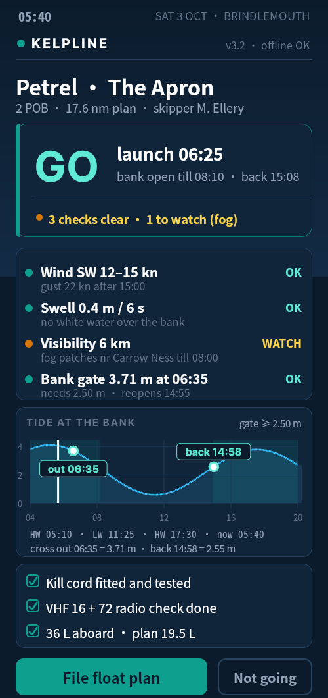
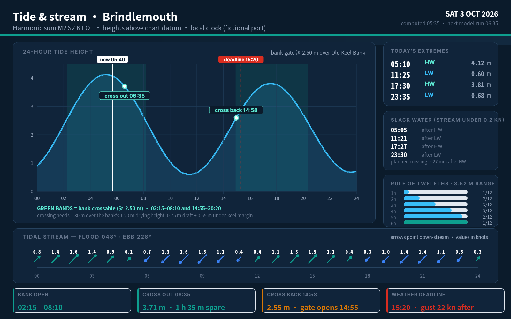
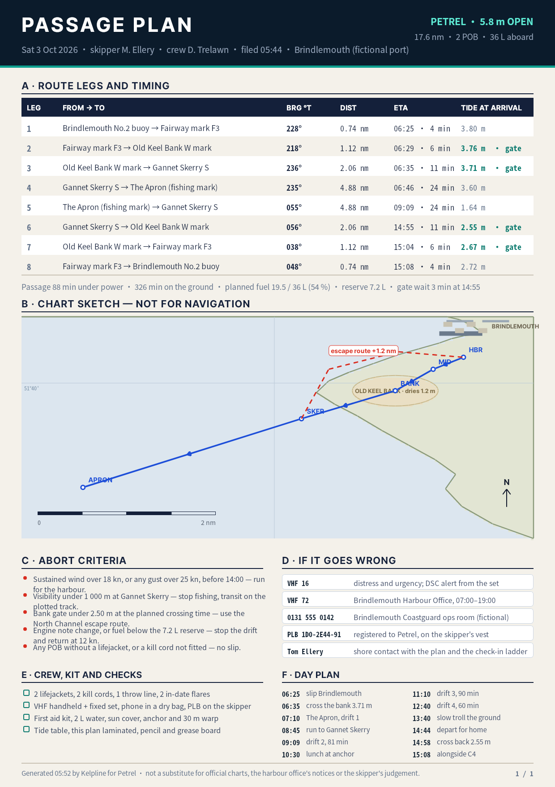
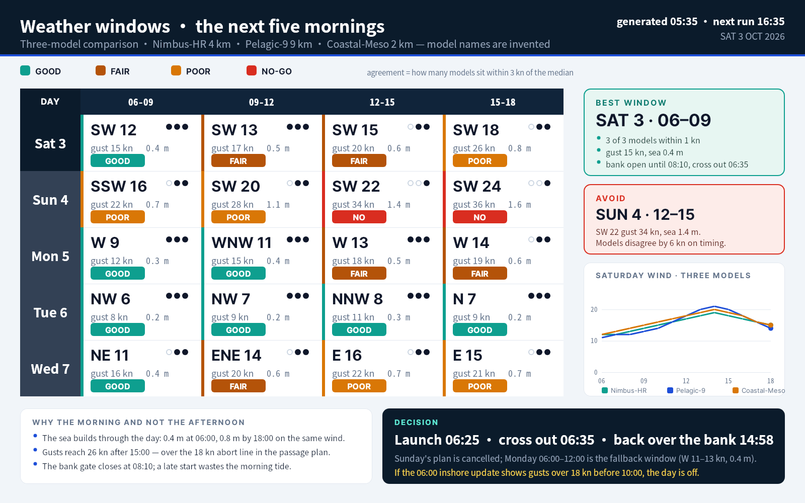
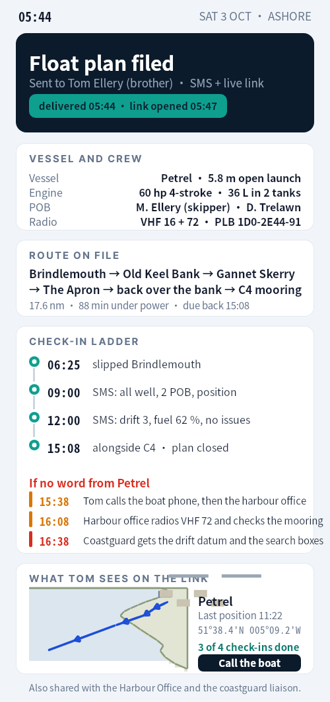
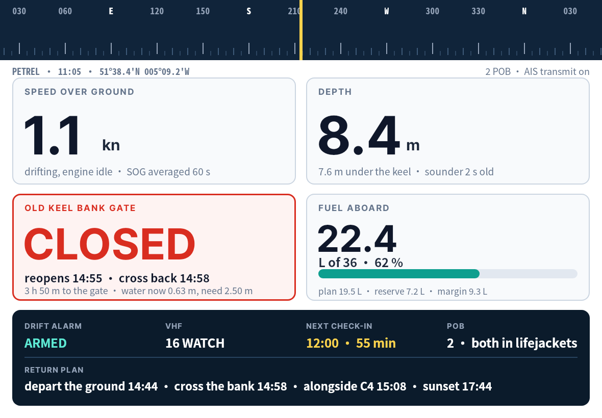
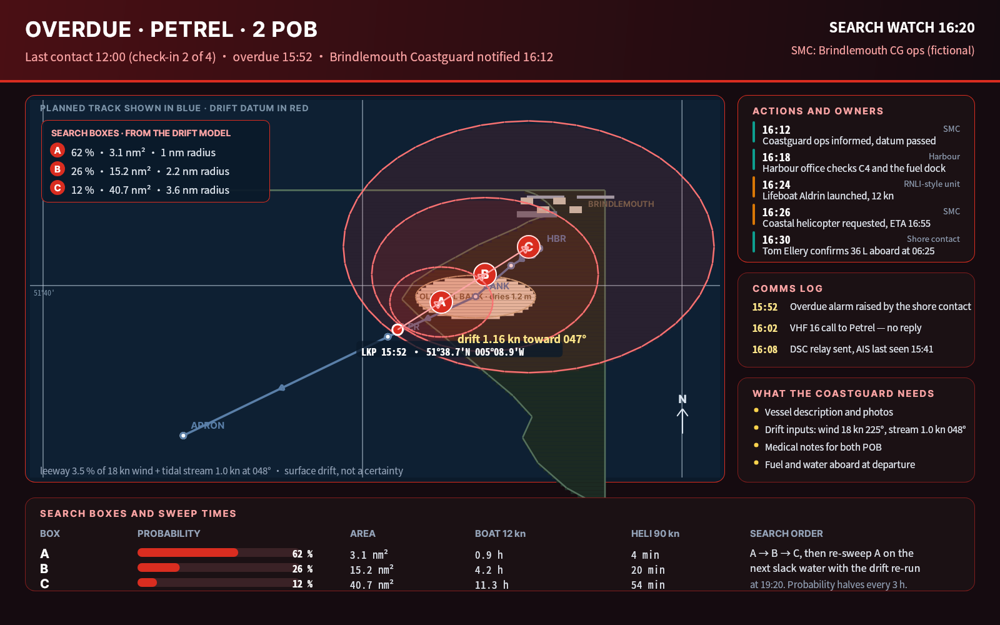
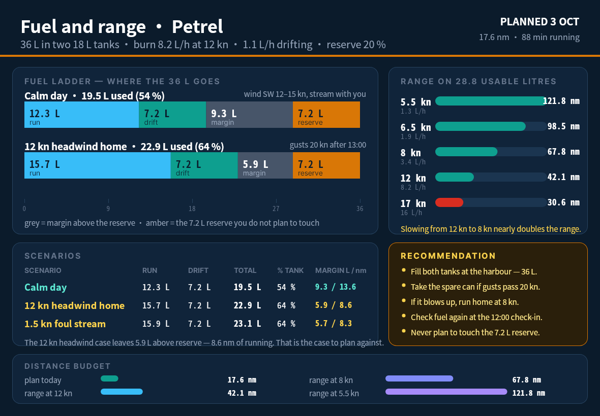
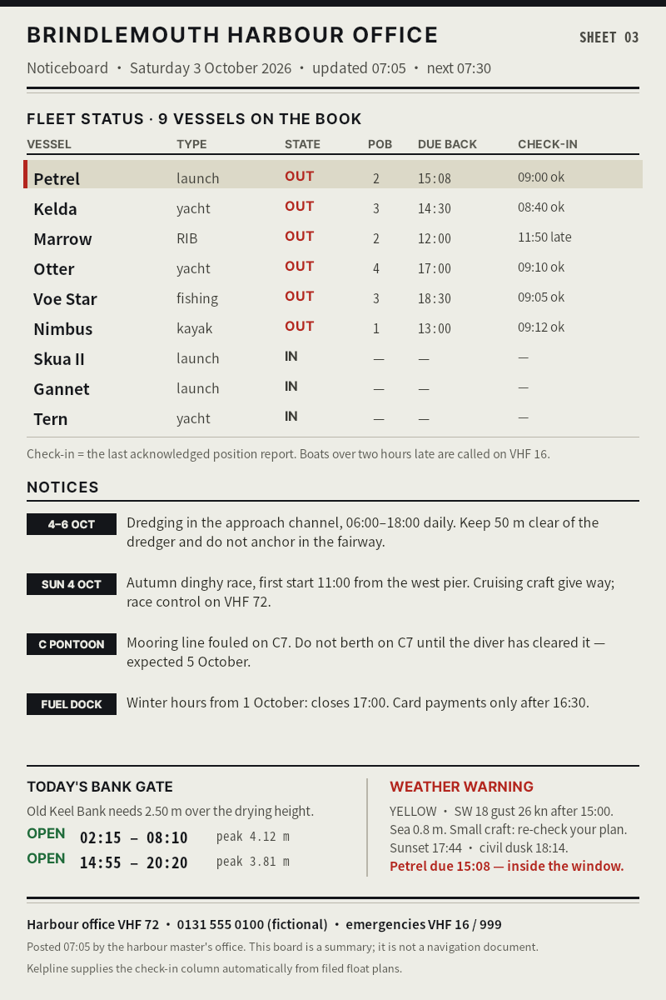
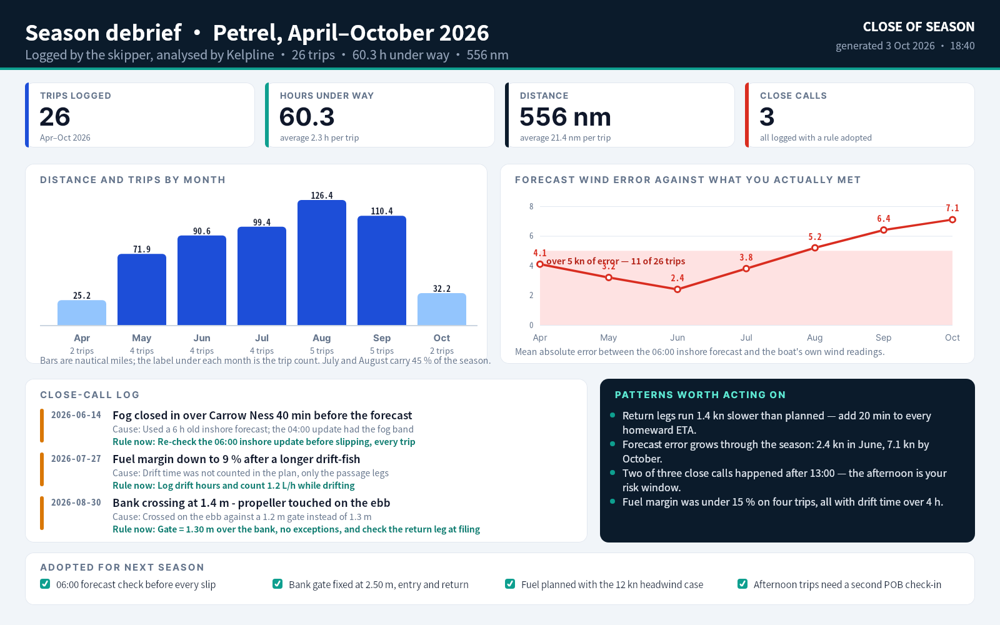

How to read this gallery
Click any image for the full-size PNG. The ten works are ordered as one journey: decide, understand, prepare, choose the day, hand over, go to sea, go wrong, plan the margin, share ashore, learn. No local server and no remote script is required to view this page.


1. Dawn go/no-go card
Who: Skipper of a 5.8 m open launch, at the kitchen table at 05:40 before a Saturday trip
Task: Decide whether to launch today, and file the float plan before leaving the house
Visual idea: Verdict first: one word at 64 px, then the four checks that produced it, then the tide curve that justifies the timing


2. Tide and stream day chart
Who: The same skipper, planning properly the evening before, and any small-craft user who wants the whole tidal day on one screen
Task: Find the two bank-crossing windows and the slack-water times, and know how much water the crossing needs
Visual idea: An instrument panel: luminous curve on navy, green gate bands, red deadline, and a stream strip of per-hour arrows under it


3. Passage plan (A4, laminated)
Who: Skipper and crew in the cockpit; also the shore contact who reads the same plan
Task: Fly the route: legs, bearings, ETAs, tide at each arrival, abort criteria and the escape route if the bank gate fails
Visual idea: A working document, not a poster: dense leg table, a chart sketch with the escape route, then the abort and emergency blocks


4. Five-morning weather windows
Who: The skipper deciding which of the next five mornings to take off work for
Task: Pick the safest morning window and know what would cancel it
Visual idea: A comparison matrix where colour carries the verdict and dots carry model agreement, with the three Saturday wind curves plotted underneath


5. Float plan and shore watch
Who: The shore contact (a family member ashore) and the skipper filing the plan
Task: Understand exactly when to expect contact, what happens if it does not come, and what to do at each escalation step
Visual idea: Quiet, light, reassuring: one navy filing card, then a ladder with times and a red escalation block that is impossible to misread


6. On-water glance display
Who: The skipper at the helm, wet hands, gloves, bright sunlight, engine idling on a drift
Task: Know speed, depth, the bank gate countdown and the fuel state without reading a menu
Visual idea: Glanceable instrument: four big tiles, 104 px numerals, one loud red CLOSED card, compass tape across the top


7. Overdue: drift datum and search boxes
Who: Coastguard watch officer and the shore contact, 20 minutes into an overdue alarm
Task: See where the boat probably is, in what order to search, and what is still missing from the picture
Visual idea: Red on near-black, one chart carrying the whole story, numbers kept quiet so the boxes and the LKP dominate


8. Fuel and range planner
Who: The skipper deciding how much fuel to take and what to do if the wind gets up on the return leg
Task: See where 36 L goes in three scenarios, and know the range at each speed before committing to a long drift
Visual idea: A ladder rather than a pie: one stacked bar per scenario, so the reserve is visibly the part you never plan to touch


9. Harbour office e-ink noticeboard
Who: Everyone on the pontoon: berth holders, visiting crews, the harbour master
Task: One look tells you which boats are out, who is late, what is closed and what the weather is doing
Visual idea: Paper-like greyscale with a single red accent: no gradients, no shadows, heavy rules, type sized for three metres


10. Season debrief
Who: The skipper at the end of the season, deciding what to change next year
Task: See the season's patterns and adopt three or four concrete rules for next year
Visual idea: Calm analytics: bar chart of the season, a red error line that rises as the season goes on, and a navy card that turns observations into rules